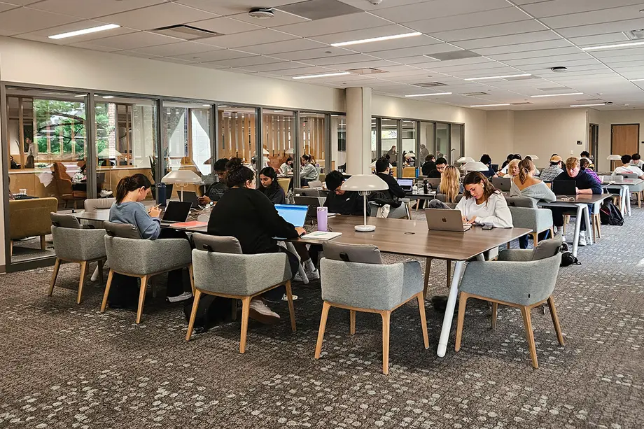
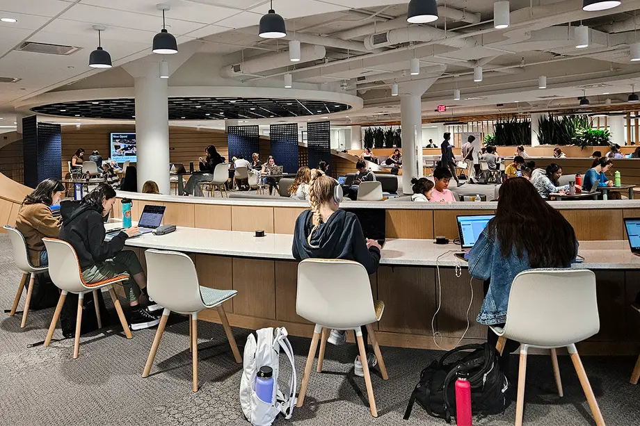

This page contains a list of quiet, collaborative, and reserved study spaces available across University of Michigan's many libraries
Quiet Study Spaces
Hatcher Library
Hatcher Reference Reading Room (Floor 2, Hatcher North)
Features: long tables, charging plugs, natural light
Asia Library Reading Room (Floor 4, Hatcher North)
Features: study desks, comfortable booths, large tables, natural lights
International Studies Reading Room (Floor 1, Hatcher North)
Features: movable tables and chairs
Hatcher North Stacks Study Tables (Multiple Floors, Hatcher North)
Features: individual desks, large tables, many tables located near large windows
Hatcher South Carrels (Floor 3-5, Hatcher South)
Features: individual study nooks (carrels), desk, window
Hatcher Floor 6 (Hatcher South)
Features: armchairs, movable chairs and tables
Shapiro Library
Shapiro Reading Room (Floor 3)
Features: natural light, large tables, comfy chairs, campus view
Shapiro Floor 4
Features: study tables, windows, round tables, privacy dividers
Art, Architecture, and Engineering Library
Art, Architecture, and Engineering Floor 3 Spaces
Features: large tables, rolling chairs, individual desks, couches, lounge chairs, pods
Taubman Health Sciences Library
Taubman Health Sciences Library Study Space (Floor 4)
Features: floor-to-ceiling windows, lounge chairs, coffee tables, pods, high-top seating, adjustable height desks, computing area
Music Library
Music Library Floor 3 and 4 Spaces
Features: large tables, cushioned chairs, lounge chairs, coffee tables
Collaborative Spaces
Hatcher Library
Floor 2 Spaces (North Building)
Features: large wooden tables, high ceilings, comfy chairs, small study tables, computing space
Clark Library Seating Area (Floor 2, South Building)
Features: couches, low tables, windows
Shapiro Library
Basement Spaces
Features: movable tables and chairs, open space
Bert's Study Lounge (Floor 1)
Features: cafe, external HDMI-connectable screens, mixed seating types
Shapiro Floor 1
Features: rearrangable low and soft seating, large tables, moveable tables and chairs, computing area, glass rooms with whiteboards, Shapiro Design Lab
Shapiro Floor 2
Features: long rectangular tables, soft seating, computing labs
Clark Commons Collaborative Spaces (Floor 3)
Features: collaboration areas with whiteboards and monitors, bar-height seating, comfy chairs, booths, adjustable height tables, armchairs
Art, Architecture, and Engineering LIbrary
Basement Spaces
Features: semi-enclosed desks with computers, 4-seater tables
Floor 2 Spaces
Features: natural light, heigh ceilings, nooks, rolling whiteboards, countertop-style seating, tables, rolling chairs
Reserved Study Spaces
There are many rooms on campus that provide bookable study spaces for you to do work in silence or with a group
Reserve a room